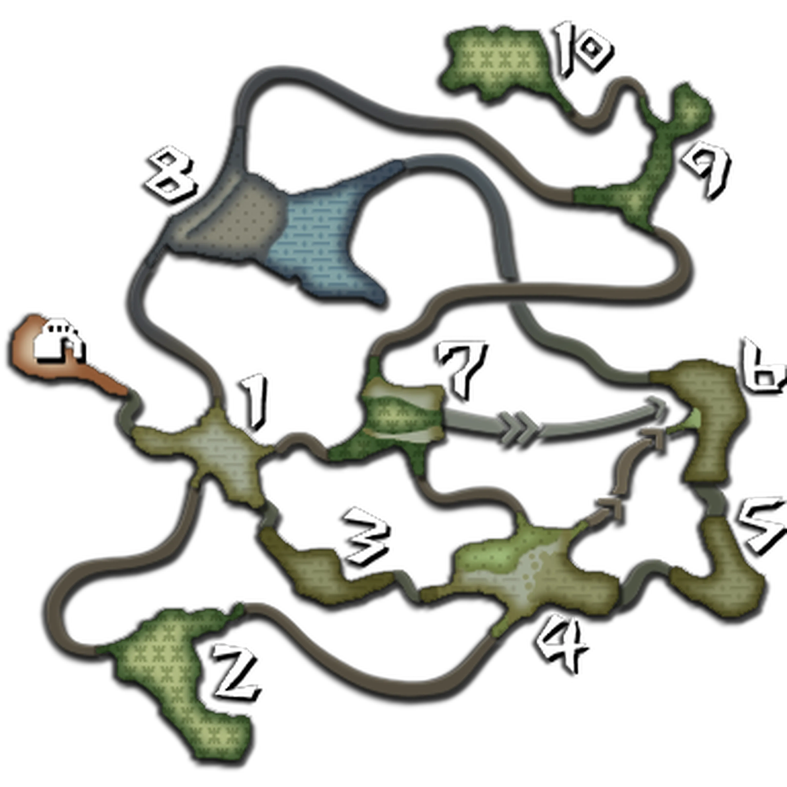
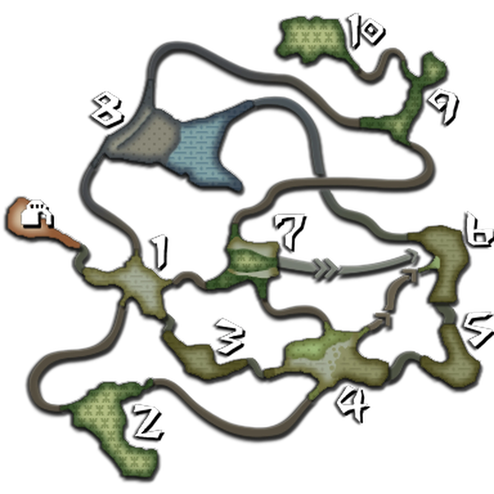

Localizaciones
En la vastedad del océano, donde la inmensidad azul se encuentra con el horizonte, los misterios del mar susurran antiguas leyendas y abren la puerta a un mundo de maravillas por descubrir, invitando a explorar las profundidades como un recordatorio de la inmensidad y la diversidad del mundo submarino. En los confines de la imaginación, donde los sueños toman forma y las ideas danzan en un torbellino de creatividad, la libertad del pensamiento desafía los límites de lo posible, abriendo la puerta a un universo de posibilidades sin fin.
Bosque de Moga
Es la primera área a la que se accede en el juego y se encuentra en las costas de la aldea de Moga. El bosque está coronado por grandes montañas y cubierto de densos bosques con cursos de agua y zonas costeras. Tiene un clima templado y húmedo, lo que lo convierte en el hábitat predilecto de numerosos monstruos como Gran Jaggi, Qurupeco, Ludroth Real, Lagiacrus, Rathalos y Rathian. El Bosque de Moga/Isla Desierta es el único mapa al que se puede ir en todo momento, saliendo por el este de la Aldea Moga. En este mapa, los jugadores pueden cazar libremente cualquier criatura para convertirla en recursos con los que mejorar el poblado.
También pueden hablar con Junior para saber qué monstruos hay cada día . El Bosque de Moga/Isla Desierta tiene varias zonas, que incluyen bosques, claros, zonas de mar, cuevas y nidos de wyverns. A lo largo del área se pueden apreciar restos de una antigua civilización que indican que el área estuvo una vez habitada por humanos. Además de la caza, el Bosque de Moga/Isla Desierta también es importante para obtener recursos.
Los recursos obtenidos en este mapa son fundamentales para desarrollar los servicios que presta la Aldea Moga, como la granja a cargo de los Felynes y la pesquera que permite enviar barcos a conseguir objetos en diferentes zonas. También se puede interactuar con el carguero Argosy para canjear objetos raros. En resumen, el Bosque de Moga/Isla Desierta es un área de caza en Monster Hunter Tri que se encuentra en las costas de la aldea de Moga. Es un hábitat importante para numerosos monstruos y ofrece la posibilidad de cazar libremente y obtener recursos para mejorar el poblado
Llanos arenosos
Es una zona desértica y se caracteriza por tener temperaturas extremas, con noches frías y días calurosos. Es una zona mayormente semidesértica, pero algunas áreas más expuestas pueden tener temperaturas extremos.
En los Llanos Arenosos, puedes encontrar diferentes especies de monstruos. Algunos de los enemigos más destacados en esta zona son los Delex, pequeños tiburones que se mueven en bancos, y los monstruos Barroth y Diablos, que son conocidos por su brutalidad y violencia.
Para acceder a los Llanos Arenosos, generalmente debes completar una misión llamada "Tour" en la que debes entregar un Ticket Zarpa que te dan en la caja de suministros . Sin embargo, no es posible explorar esta zona sin tener que tomar una misión.
Bosque inundado
 

Esta área se caracteriza por sus interminables lluvias que alimentan numerosos ríos y cascadas, lo que provoca que muchas zonas del bosque estén inundadas. Es una extensa jungla con una gran vegetación y se compone de áreas terrestres y acuáticas.
En el Bosque Inundado, puedes encontrar diferentes monstruos poderosos, como el Ludroth Real y el Gobul. Estos monstruos pueden representar un desafío para los cazadores, pero también ofrecen la oportunidad de obtener valiosos materiales para fabricar armas y armaduras más poderosas.
Para explorar el Bosque Inundado, es recomendable aceptar la misión "Tour: Bosque Inundado", que te permite moverte libremente durante 50 minutos en esta zona. También hay un atajo desde el campamento base al área 6, lo que facilita la exploración.
Además de la caza, en el Bosque Inundado puedes encontrar recursos como la flor de cactus y diferentes tipos de peces, como el Atn pincho y el Arrowana bomba. Estos recursos son útiles para completar misiones y mejorar tu equipamiento.
Tundra
La Tundra es una zona helada caracterizada por sus llanuras heladas, oscuras cuevas y enormes glaciares .
En la Tundra, los jugadores pueden aprovechar para cazar monstruos o recoger objetos típicos del hábitat. Para acceder a la Tundra, los jugadores pueden recoger un ticket en el balón de suministros y entregarlo en la misión correspondiente.
Esta zona helada alberga una variedad de monstruos únicos y adaptados a las condiciones extremas, como Lagombi, Barioth, Gigginox y Great Baggi.
En el campamento base de la Tundra, se puede encontrar un mapa del mundo de Monster Hunter, y se pueden observar grandes rocas de hielo flotando. Estas rocas de hielo flotantes y los muros de hielo sugieren que la Tundra podría estar experimentando un clima más cálido, lo que provoca el derretimiento de los glaciares.
Volcan
Esta área se caracteriza por su entorno volcánico, con altas temperaturas, lava y nubes de ceniza. A diferencia de otras zonas volcánicas, el Volcán en Monster Hunter Tri también cuenta con áreas boscosas donde pastan herbívoros.
En el Volcán, puedes encontrar una variedad de monstruos, incluyendo al Agnaktor y al Uragaan. Estos monstruos son únicos de esta zona y presentan desafíos adicionales para los cazadores. El Agnaktor es un monstruo amante de la lava, mientras que el Uragaan realiza poderosos ataques con su mandíbula y rodando.
Para explorar el Volcán, es importante llevar bebidas frías para combatir las altas temperaturas generadas por el volcán. También es necesario tener precaución al acercarse a la lava y a los Uroktor, que emergen como géiseres.
Además de la caza, en el Volcán puedes encontrar hierbas y minerales interesantes para elaborar armas y objetos superiores. También hay misiones específicas relacionadas con esta zona, como "La furia del volcán", donde debes cazar a un Uragaan en el volcán.
Ruinas Submarinas

Las Ruinas Submarinas son una zona subacuática especial introducida en Monster Hunter 3. Está ubicada cerca de Moga, en una zona apartada de la Isla Desierta. La entrada a través de un acantilado conduce a enormes cuevas submarinas llenas de ruinas de una antigua civilización, supuestamente los ancestros de Moga.
En las Ruinas Submarinas, puedes enfrentarte al dragón Ceadeus en el enfrentamiento final del modo offline. El campamento base está en la Isla Desierta, pero debes sumergirte en el agua para perseguir al Ceadeus a través de las ruinas subacuáticas .
Además de las batallas contra el Ceadeus, en las Ruinas Submarinas también puedes encontrar recursos y materiales útiles para fabricar armas y armaduras más poderosas.


- Encuesta de satisfaccion
- Siguenos en nuestras redes sociales:
-